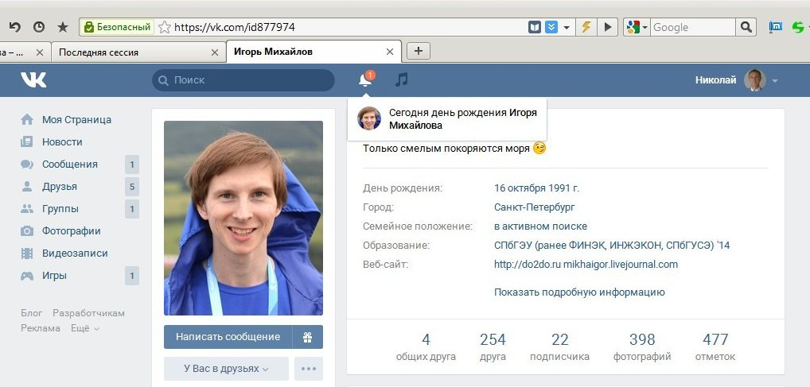
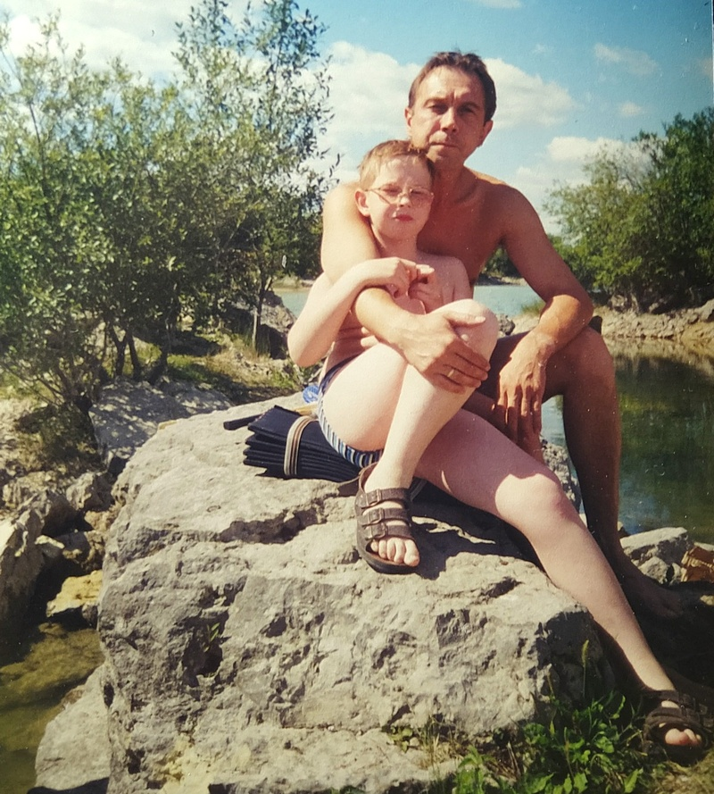
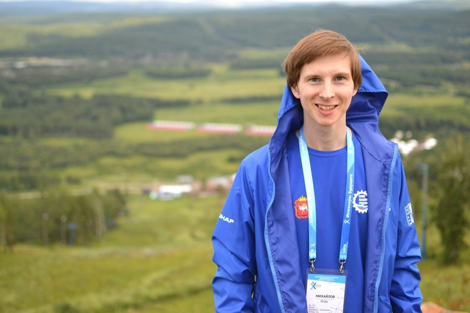
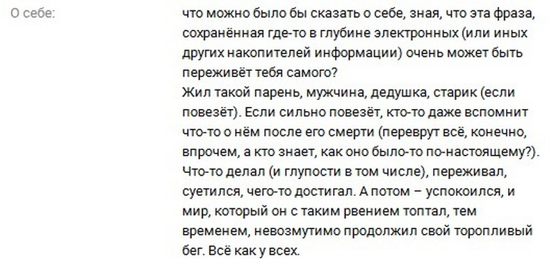
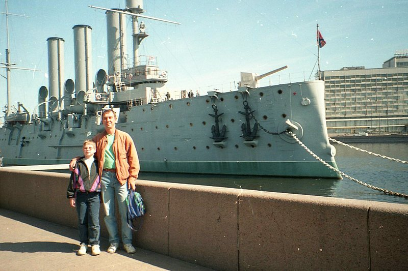
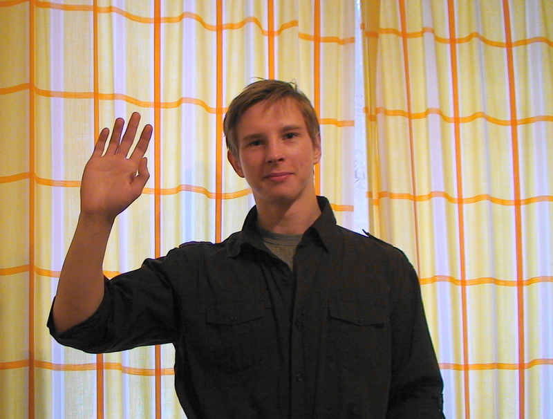

16 октября 2016 года я хотел поздравить Игоря с 25-ти летием.
Юбилей.
Как всегда, я хотел написать ему массу наилучших пожеланий, пожелать здоровья, успехов в учёбе и работе.
Как всегда, каждое письмо сыну я заканчивал словами: «не болей и целую в нос».

Но уже никогда больше я ему ничего не напишу.
20 сентября 2016 Игорь умер.
Аневризма сосудов головного мозга, которая убила моего ребёнка за считанные минуты.
Хочется выть и выкрикивать нехорошие слова.
Но Игорь не любил бранные слова, поэтому я позволю себе только одно нехорошее слово.

Жизнь, сука,
которая принадлежит человеку, но совершенно не спрашивает, хочет ли человек именно такой жизни.
Которая очень несправедлива, если дети уходят раньше родителей.
Игорь очень любил жизнь и старался успеть сделать в ней как можно больше.
Умнейший ребёнок, гордость для своих родителей.
Знал английский, немецкий, испанский языки.
Да что знал — читал на них лекции в университете!
Оставалось чуть-чуть до степени кандидата наук.
С увлечением рассказывал мне о своих успехах в науке и будущих планах.
Писал рассказы.
Не пил, не курил, был очень активен физически.
Но у жизни на его счёт были свои планы…

Смерть, сука,
самое нелепое изобретение природы, которая, как бомба замедленного действия, заложена в каждом из нас и избежать её взрыва не удастся никому; но каждый надеется, что взрыв произойдёт как можно позже…
Любовь, сука,
которую человек испытывает к своим родным, близким, друзьям.
И которая становиться мукой, когда любимого человека больше нет.
Поэтому успейте любить человека при жизни, старайтесь не делать ему плохо или больно.
Я рад, что Игорь до последнего дня знал, что родители его очень любят.
Мысли, сука,
которые постоянно крутятся в голове, но после смерти являются лишь иллюзией.
Ты можешь думать, размышлять, мечтать, но после твоего ухода отец сможет разве что сохранить скрин твоих мыслей.
(Это Игорь в соцсети писал о себе):

Слёзы, сука,
которые теперь льются, не пересыхая.

Боль, сука,
невыносимая боль, которая заполняет всё и не хочет уходить…
Мы любим тебя, Игорь, очень сильно любим…

* 16 октября 1991 - † 20 сентября 2016